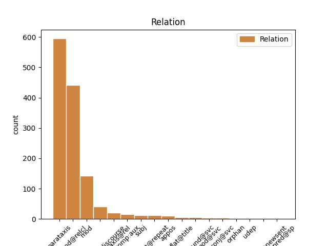
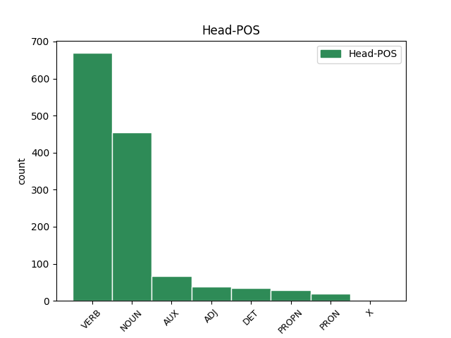
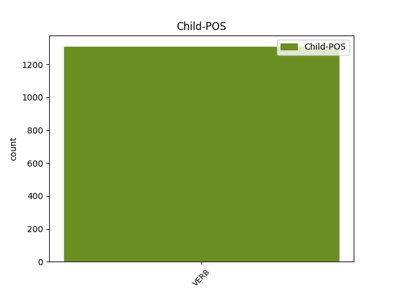

Distribution of features within this leaf



Agreement Rules sorted by frequency.
- When the dependent token is the parataxis(parataxis) of the head token, and the dependent token is VERB.
1 — _ _ _ _ 0 _ _ _
2 Зараз _ _ _ _ 0 _ _ _
3 буде бути VERB Vapif3s Aspect=Imp|Mood=Ind|Number=Sing|Person=3|Tense=Fut|VerbForm=Fin 0 _ _ _
4 біда _ _ _ _ 0 _ _ _
5 , _ _ _ _ 0 _ _ _
6 — _ _ _ _ 0 _ _ _
7 казав казати VERB Vmpis-sm Aspect=Imp|Gender=Masc|Mood=Ind|Number=Sing|Tense=Past|VerbForm=Fin 3 parataxis _ Id=39cl|LTranslit=kazaty|Translit=kazav
8 Микола _ _ _ _ 0 _ _ _
9 Максимові _ _ _ _ 0 _ _ _
10 . _ _ _ _ 0 _ _ _
1 Але _ _ _ _ 0 _ _ _
2 що _ _ _ _ 0 _ _ _
3 б _ _ _ _ 0 _ _ _
4 ми _ _ _ _ 0 _ _ _
5 собі _ _ _ _ 0 _ _ _
6 не _ _ _ _ 0 _ _ _
7 нафантазували _ _ _ _ 0 _ _ _
8 , _ _ _ _ 0 _ _ _
9 правдою _ _ _ _ 0 _ _ _
10 буде _ _ _ _ 0 _ _ _
11 одне _ _ _ _ 0 _ _ _
12 - _ _ _ _ 0 _ _ _
13 відсутність _ _ _ _ 0 _ _ _
14 ресурсів _ _ _ _ 0 _ _ _
15 забрати _ _ _ _ 0 _ _ _
16 з _ _ _ _ 0 _ _ _
17 свого _ _ _ _ 0 _ _ _
18 життя _ _ _ _ 0 _ _ _
19 фактори фактор NOUN Ncmpan Animacy=Inan|Case=Acc|Gender=Masc|Number=Plur 0 _ _ _
20 , _ _ _ _ 0 _ _ _
21 які _ _ _ _ 0 _ _ _
22 його _ _ _ _ 0 _ _ _
23 отруюють отруювати VERB Vmpip3p Aspect=Imp|Mood=Ind|Number=Plur|Person=3|Tense=Pres|VerbForm=Fin 19 mod@relcl _ Id=3987|LTranslit=otrujuvaty|SpaceAfter=No|Translit=otrujujuť
24 . _ _ _ _ 0 _ _ _
1 Однак _ _ _ _ 0 _ _ _
2 , _ _ _ _ 0 _ _ _
3 незважаючи _ _ _ _ 0 _ _ _
4 на _ _ _ _ 0 _ _ _
5 судові _ _ _ _ 0 _ _ _
6 справи _ _ _ _ 0 _ _ _
7 і _ _ _ _ 0 _ _ _
8 протести _ _ _ _ 0 _ _ _
9 громадськості _ _ _ _ 0 _ _ _
10 , _ _ _ _ 0 _ _ _
11 дельфінарій _ _ _ _ 0 _ _ _
12 " _ _ _ _ 0 _ _ _
13 НЕМО _ _ _ _ 0 _ _ _
14 " _ _ _ _ 0 _ _ _
15 не _ _ _ _ 0 _ _ _
16 збирається збиратися VERB Vmpip3s Aspect=Imp|Mood=Ind|Number=Sing|Person=3|Tense=Pres|VerbForm=Fin 0 _ _ _
17 втрачати _ _ _ _ 0 _ _ _
18 " _ _ _ _ 0 _ _ _
19 годівницю _ _ _ _ 0 _ _ _
20 " _ _ _ _ 0 _ _ _
21 , _ _ _ _ 0 _ _ _
22 тому _ _ _ _ 0 _ _ _
23 почав почати VERB Vmeis-sm Aspect=Perf|Gender=Masc|Mood=Ind|Number=Sing|Tense=Past|VerbForm=Fin 16 mod _ Id=390f|LTranslit=počaty|Translit=počav
24 шукати _ _ _ _ 0 _ _ _
25 нове _ _ _ _ 0 _ _ _
26 місце _ _ _ _ 0 _ _ _
27 свого _ _ _ _ 0 _ _ _
28 розташування _ _ _ _ 0 _ _ _
29 . _ _ _ _ 0 _ _ _
1 Як _ _ _ _ 0 _ _ _
2 розповів розповісти VERB Vmeis-sm Aspect=Perf|Gender=Masc|Mood=Ind|Number=Sing|Tense=Past|VerbForm=Fin 18 parataxis@discourse _ Id=2dyp|LTranslit=rozpovisty|Translit=rozpoviv
3 29-річний _ _ _ _ 0 _ _ _
4 одесит _ _ _ _ 0 _ _ _
5 , _ _ _ _ 0 _ _ _
6 який _ _ _ _ 0 _ _ _
7 їхав _ _ _ _ 0 _ _ _
8 до _ _ _ _ 0 _ _ _
9 сусідньої _ _ _ _ 0 _ _ _
10 країни _ _ _ _ 0 _ _ _
11 на _ _ _ _ 0 _ _ _
12 заробітки _ _ _ _ 0 _ _ _
13 , _ _ _ _ 0 _ _ _
14 він _ _ _ _ 0 _ _ _
15 й _ _ _ _ 0 _ _ _
16 справді _ _ _ _ 0 _ _ _
17 періодично _ _ _ _ 0 _ _ _
18 вживає вживати VERB Vmpip3s Aspect=Imp|Mood=Ind|Number=Sing|Person=3|Tense=Pres|VerbForm=Fin 0 _ _ _
19 наркотики _ _ _ _ 0 _ _ _
20 , _ _ _ _ 0 _ _ _
21 тож _ _ _ _ 0 _ _ _
22 , _ _ _ _ 0 _ _ _
23 вирушаючи _ _ _ _ 0 _ _ _
24 в _ _ _ _ 0 _ _ _
25 дорогу _ _ _ _ 0 _ _ _
26 , _ _ _ _ 0 _ _ _
27 взяв _ _ _ _ 0 _ _ _
28 дурман _ _ _ _ 0 _ _ _
29 - _ _ _ _ 0 _ _ _
30 зілля _ _ _ _ 0 _ _ _
31 з _ _ _ _ 0 _ _ _
32 собою _ _ _ _ 0 _ _ _
33 про _ _ _ _ 0 _ _ _
34 « _ _ _ _ 0 _ _ _
35 запас _ _ _ _ 0 _ _ _
36 » _ _ _ _ 0 _ _ _
37 . _ _ _ _ 0 _ _ _
1 Під _ _ _ _ 0 _ _ _
2 час _ _ _ _ 0 _ _ _
3 показу _ _ _ _ 0 _ _ _
4 у _ _ _ _ 0 _ _ _
5 США _ _ _ _ 0 _ _ _
6 , _ _ _ _ 0 _ _ _
7 що _ _ _ _ 0 _ _ _
8 розпочався _ _ _ _ 0 _ _ _
9 18 _ _ _ _ 0 _ _ _
10 вересня _ _ _ _ 0 _ _ _
11 2015 _ _ _ _ 0 _ _ _
12 року _ _ _ _ 0 _ _ _
13 , _ _ _ _ 0 _ _ _
14 протягом _ _ _ _ 0 _ _ _
15 першого _ _ _ _ 0 _ _ _
16 тижня _ _ _ _ 0 _ _ _
17 фільм _ _ _ _ 0 _ _ _
18 був бути AUX Vapis-sm Aspect=Imp|Gender=Masc|Mood=Ind|Number=Sing|Tense=Past|VerbForm=Fin 0 _ _ _
19 показаний _ _ _ _ 0 _ _ _
20 у _ _ _ _ 0 _ _ _
21 545 _ _ _ _ 0 _ _ _
22 кінотеатрах _ _ _ _ 0 _ _ _
23 і _ _ _ _ 0 _ _ _
24 зібрав _ _ _ _ 0 _ _ _
25 7 222 035 _ _ _ _ 0 _ _ _
26 $ _ _ _ _ 0 _ _ _
27 , _ _ _ _ 0 _ _ _
28 що _ _ _ _ 0 _ _ _
29 на _ _ _ _ 0 _ _ _
30 той _ _ _ _ 0 _ _ _
31 час _ _ _ _ 0 _ _ _
32 дозволило дозволити VERB Vmeis-sn Aspect=Perf|Gender=Neut|Mood=Ind|Number=Sing|Tense=Past|VerbForm=Fin 18 parataxis@rel _ Id=39rh|LTranslit=dozvolyty|Translit=dozvolylo
33 йому _ _ _ _ 0 _ _ _
34 зайняти _ _ _ _ 0 _ _ _
35 5 _ _ _ _ 0 _ _ _
36 місце _ _ _ _ 0 _ _ _
37 серед _ _ _ _ 0 _ _ _
38 усіх _ _ _ _ 0 _ _ _
39 прем'єр _ _ _ _ 0 _ _ _
40 . _ _ _ _ 0 _ _ _
1 Що _ _ _ _ 0 _ _ _
2 , _ _ _ _ 0 _ _ _
3 наприклад _ _ _ _ 0 _ _ _
4 , _ _ _ _ 0 _ _ _
5 мила _ _ _ _ 0 _ _ _
6 й _ _ _ _ 0 _ _ _
7 безпосередня _ _ _ _ 0 _ _ _
8 журналістка _ _ _ _ 0 _ _ _
9 , _ _ _ _ 0 _ _ _
10 яка _ _ _ _ 0 _ _ _
11 під _ _ _ _ 0 _ _ _
12 час _ _ _ _ 0 _ _ _
13 Майдану _ _ _ _ 0 _ _ _
14 була бути AUX Vapis-sf Aspect=Imp|Gender=Fem|Mood=Ind|Number=Sing|Tense=Past|VerbForm=Fin 0 _ _ _
15 ляпнула ляпнути VERB Vmeis-sf Aspect=Perf|Gender=Fem|Mood=Ind|Number=Sing|Tense=Past|VerbForm=Fin 14 comp:aux _ Id=2b5k|LTranslit=ľаpnuty|Translit=ľаpnula
16 мені _ _ _ _ 0 _ _ _
17 в _ _ _ _ 0 _ _ _
18 ефірі _ _ _ _ 0 _ _ _
19 " _ _ _ _ 0 _ _ _
20 Громадського _ _ _ _ 0 _ _ _
21 " _ _ _ _ 0 _ _ _
22 : _ _ _ _ 0 _ _ _
23 " _ _ _ _ 0 _ _ _
24 Шевельов _ _ _ _ 0 _ _ _
25 ? _ _ _ _ 0 _ _ _
26 Так _ _ _ _ 0 _ _ _
27 він _ _ _ _ 0 _ _ _
28 же _ _ _ _ 0 _ _ _
29 нацистський _ _ _ _ 0 _ _ _
30 колаборант _ _ _ _ 0 _ _ _
31 ! _ _ _ _ 0 _ _ _
32 " _ _ _ _ 0 _ _ _
33 , _ _ _ _ 0 _ _ _
34 - _ _ _ _ 0 _ _ _
35 не _ _ _ _ 0 _ _ _
36 " _ _ _ _ 0 _ _ _
37 темник _ _ _ _ 0 _ _ _
38 " _ _ _ _ 0 _ _ _
39 від _ _ _ _ 0 _ _ _
40 ФСБ _ _ _ _ 0 _ _ _
41 слідом _ _ _ _ 0 _ _ _
42 за _ _ _ _ 0 _ _ _
43 Добкіним _ _ _ _ 0 _ _ _
44 озвучувала _ _ _ _ 0 _ _ _
45 , _ _ _ _ 0 _ _ _
46 а _ _ _ _ 0 _ _ _
47 просто _ _ _ _ 0 _ _ _
48 " _ _ _ _ 0 _ _ _
49 на _ _ _ _ 0 _ _ _
50 автоматі _ _ _ _ 0 _ _ _
51 " _ _ _ _ 0 _ _ _
52 , _ _ _ _ 0 _ _ _
53 як _ _ _ _ 0 _ _ _
54 німфа _ _ _ _ 0 _ _ _
55 Ехо _ _ _ _ 0 _ _ _
56 , _ _ _ _ 0 _ _ _
57 повторила _ _ _ _ 0 _ _ _
58 те _ _ _ _ 0 _ _ _
59 , _ _ _ _ 0 _ _ _
60 що _ _ _ _ 0 _ _ _
61 найголосніше _ _ _ _ 0 _ _ _
62 в _ _ _ _ 0 _ _ _
63 ефірах _ _ _ _ 0 _ _ _
64 про _ _ _ _ 0 _ _ _
65 Шевельова _ _ _ _ 0 _ _ _
66 звучало _ _ _ _ 0 _ _ _
67 ( _ _ _ _ 0 _ _ _
68 чула _ _ _ _ 0 _ _ _
69 дзвін _ _ _ _ 0 _ _ _
70 ! _ _ _ _ 0 _ _ _
71 ) _ _ _ _ 0 _ _ _
72 . _ _ _ _ 0 _ _ _
1 І _ _ _ _ 0 _ _ _
2 видно _ _ _ _ 0 _ _ _
3 всі _ _ _ _ 0 _ _ _
4 сузір'я _ _ _ _ 0 _ _ _
5 , _ _ _ _ 0 _ _ _
6 всі _ _ _ _ 0 _ _ _
7 туманності _ _ _ _ 0 _ _ _
8 , _ _ _ _ 0 _ _ _
9 які _ _ _ _ 0 _ _ _
10 падають падати VERB Vmpip3p Aspect=Imp|Mood=Ind|Number=Plur|Person=3|Tense=Pres|VerbForm=Fin 0 _ _ _
11 , _ _ _ _ 0 _ _ _
12 падають падати VERB Vmpip3p Aspect=Imp|Mood=Ind|Number=Plur|Person=3|Tense=Pres|VerbForm=Fin 10 flat@repeat _ Id=2plc|LTranslit=padaty|Translit=padajuť
13 на _ _ _ _ 0 _ _ _
14 тебе _ _ _ _ 0 _ _ _
1 Одна один DET Pi--f-sna Case=Nom|Gender=Fem|Number=Sing|PronType=Ind 0 _ _ _
2 з _ _ _ _ 0 _ _ _
3 версій _ _ _ _ 0 _ _ _
4 - _ _ _ _ 0 _ _ _
5 вирвалась вирватися VERB Vmeis-sf Aspect=Perf|Gender=Fem|Mood=Ind|Number=Sing|Tense=Past|VerbForm=Fin 1 subj _ Id=2itx|LTranslit=vyrvatyśа|Translit=vyrvalaś
6 і _ _ _ _ 0 _ _ _
7 втекла _ _ _ _ 0 _ _ _
8 . _ _ _ _ 0 _ _ _
1 Припускаю _ _ _ _ 0 _ _ _
2 ( _ _ _ _ 0 _ _ _
3 поки _ _ _ _ 0 _ _ _
4 не _ _ _ _ 0 _ _ _
5 доведено _ _ _ _ 0 _ _ _
6 протилежне _ _ _ _ 0 _ _ _
7 ) _ _ _ _ 0 _ _ _
8 , _ _ _ _ 0 _ _ _
9 що _ _ _ _ 0 _ _ _
10 автори _ _ _ _ 0 _ _ _
11 їх _ _ _ _ 0 _ _ _
12 просто _ _ _ _ 0 _ _ _
13 " _ _ _ _ 0 _ _ _
14 не _ _ _ _ 0 _ _ _
15 бачать бачити VERB Vmpip3p Aspect=Imp|Mood=Ind|Number=Plur|Person=3|Tense=Pres|VerbForm=Fin 0 _ _ _
16 " _ _ _ _ 0 _ _ _
17 - _ _ _ _ 0 _ _ _
18 не _ _ _ _ 0 _ _ _
19 виокремлюють виокремлювати VERB Vmpip3p Aspect=Imp|Mood=Ind|Number=Plur|Person=3|Tense=Pres|VerbForm=Fin 15 appos _ Id=2b4y|LTranslit=vyokremľuvaty|Translit=vyokremľujuť
20 із _ _ _ _ 0 _ _ _
21 дискурсу _ _ _ _ 0 _ _ _
22 , _ _ _ _ 0 _ _ _
23 яким _ _ _ _ 0 _ _ _
24 послуговуються _ _ _ _ 0 _ _ _
25 . _ _ _ _ 0 _ _ _
1 На _ _ _ _ 0 _ _ _
2 блокпосту _ _ _ _ 0 _ _ _
3 « _ _ _ _ 0 _ _ _
4 сепарів _ _ _ _ 0 _ _ _
5 » _ _ _ _ 0 _ _ _
6 спробуй спробувати VERB Vmem-2s Aspect=Perf|Mood=Imp|Number=Sing|Person=2|VerbForm=Fin 0 _ _ _
7 таке _ _ _ _ 0 _ _ _
8 ляпни ляпнути VERB Vmem-2s Aspect=Perf|Mood=Imp|Number=Sing|Person=2|VerbForm=Fin 6 compound@svc _ Id=39u5|LTranslit=ľаpnuty|SpaceAfter=No|Translit=ľаpny
9 ... _ _ _ _ 0 _ _ _
1 Тому _ _ _ _ 0 _ _ _
2 весь _ _ _ _ 0 _ _ _
3 сенс _ _ _ _ 0 _ _ _
4 мого _ _ _ _ 0 _ _ _
5 існування _ _ _ _ 0 _ _ _
6 полягав _ _ _ _ 0 _ _ _
7 у _ _ _ _ 0 _ _ _
8 тому _ _ _ _ 0 _ _ _
9 , _ _ _ _ 0 _ _ _
10 аби _ _ _ _ 0 _ _ _
11 нізащо _ _ _ _ 0 _ _ _
12 не _ _ _ _ 0 _ _ _
13 стати _ _ _ _ 0 _ _ _
14 серйозним _ _ _ _ 0 _ _ _
15 членом _ _ _ _ 0 _ _ _
16 суспільства _ _ _ _ 0 _ _ _
17 , _ _ _ _ 0 _ _ _
18 не _ _ _ _ 0 _ _ _
19 бути _ _ _ _ 0 _ _ _
20 відмінником _ _ _ _ 0 _ _ _
21 , _ _ _ _ 0 _ _ _
22 не _ _ _ _ 0 _ _ _
23 отримати _ _ _ _ 0 _ _ _
24 червоного _ _ _ _ 0 _ _ _
25 диплома _ _ _ _ 0 _ _ _
26 і _ _ _ _ 0 _ _ _
27 не _ _ _ _ 0 _ _ _
28 опинитися _ _ _ _ 0 _ _ _
29 на _ _ _ _ 0 _ _ _
30 дошці дошка NOUN Ncfsln Animacy=Inan|Case=Loc|Gender=Fem|Number=Sing 0 _ _ _
31 пошани _ _ _ _ 0 _ _ _
32 : _ _ _ _ 0 _ _ _
33 « _ _ _ _ 0 _ _ _
34 Ними _ _ _ _ 0 _ _ _
35 пишається пишатися VERB Vmpip3s Aspect=Imp|Mood=Ind|Number=Sing|Person=3|Tense=Pres|VerbForm=Fin 30 flat@title _ Graft=Yes|Id=26aj|LTranslit=pyšatyśа|Translit=pyšaěťśа
36 наше _ _ _ _ 0 _ _ _
37 місто _ _ _ _ 0 _ _ _
38 » _ _ _ _ 0 _ _ _
39 . _ _ _ _ 0 _ _ _
1 Те _ _ _ _ 0 _ _ _
2 , _ _ _ _ 0 _ _ _
3 що _ _ _ _ 0 _ _ _
4 ми _ _ _ _ 0 _ _ _
5 з _ _ _ _ 0 _ _ _
6 колегами _ _ _ _ 0 _ _ _
7 бекали _ _ _ _ 0 _ _ _
8 - _ _ _ _ 0 _ _ _
9 мекали _ _ _ _ 0 _ _ _
10 то _ _ _ _ 0 _ _ _
11 сям _ _ _ _ 0 _ _ _
12 то _ _ _ _ 0 _ _ _
13 там _ _ _ _ 0 _ _ _
14 , _ _ _ _ 0 _ _ _
15 то _ _ _ _ 0 _ _ _
16 се _ _ _ _ 0 _ _ _
17 то _ _ _ _ 0 _ _ _
18 те _ _ _ _ 0 _ _ _
19 , _ _ _ _ 0 _ _ _
20 людина _ _ _ _ 0 _ _ _
21 взяла взяти VERB Vmeis-sf Aspect=Perf|Gender=Fem|Mood=Ind|Number=Sing|Tense=Past|VerbForm=Fin 0 _ _ _
22 й _ _ _ _ 0 _ _ _
23 сформулювала сформулювати VERB Vmeis-sf Aspect=Perf|Gender=Fem|Mood=Ind|Number=Sing|Tense=Past|VerbForm=Fin 21 conj@svc _ Id=1npk|LTranslit=sformuľuvaty|Translit=sformuľuvala
24 стисло _ _ _ _ 0 _ _ _
25 , _ _ _ _ 0 _ _ _
26 чітко _ _ _ _ 0 _ _ _
27 й _ _ _ _ 0 _ _ _
28 по _ _ _ _ 0 _ _ _
29 суті _ _ _ _ 0 _ _ _
30 . _ _ _ _ 0 _ _ _
1 Ну _ _ _ _ 0 _ _ _
2 а _ _ _ _ 0 _ _ _
3 це _ _ _ _ 0 _ _ _
4 вже _ _ _ _ 0 _ _ _
5 пішов піти VERB Vmeis-sm Aspect=Perf|Gender=Masc|Mood=Ind|Number=Sing|Tense=Past|VerbForm=Fin 0 _ _ _
6 подивився подивитися VERB Vmeis-sm Aspect=Perf|Gender=Masc|Mood=Ind|Number=Sing|Tense=Past|VerbForm=Fin 5 mod@svc _ Id=1sdc|LTranslit=podyvytyśа|Translit=podyvyvśа
7 на _ _ _ _ 0 _ _ _
8 крепексі _ _ _ _ 0 _ _ _
9 вміст _ _ _ _ 0 _ _ _
10 /dev _ _ _ _ 0 _ _ _
11 , _ _ _ _ 0 _ _ _
12 а _ _ _ _ 0 _ _ _
13 також _ _ _ _ 0 _ _ _
14 mount _ _ _ _ 0 _ _ _
15 - _ _ _ _ 0 _ _ _
16 l _ _ _ _ 0 _ _ _
17 , _ _ _ _ 0 _ _ _
18 - _ _ _ _ 0 _ _ _
19 перелічує _ _ _ _ 0 _ _ _
20 змонтовані _ _ _ _ 0 _ _ _
21 фс _ _ _ _ 0 _ _ _
22 дерева _ _ _ _ 0 _ _ _
23 . _ _ _ _ 0 _ _ _
1 Як _ _ _ _ 0 _ _ _
2 сказав сказати VERB Vmeis-sm Aspect=Perf|Gender=Masc|Mood=Ind|Number=Sing|Tense=Past|VerbForm=Fin 0 _ _ _
3 він _ _ _ _ 0 _ _ _
4 « _ _ _ _ 0 _ _ _
5 не _ _ _ _ 0 _ _ _
6 хочу хотіти VERB Vmpip1s Aspect=Imp|Mood=Ind|Number=Sing|Person=1|Tense=Pres|VerbForm=Fin 2 udep _ Graft=Yes|Id=0dh5|LTranslit=chotity|SpaceAfter=No|Translit=choču
7 » _ _ _ _ 0 _ _ _
8 , _ _ _ _ 0 _ _ _
9 так _ _ _ _ 0 _ _ _
10 усі _ _ _ _ 0 _ _ _
11 злидні _ _ _ _ 0 _ _ _
12 і _ _ _ _ 0 _ _ _
13 кинулись _ _ _ _ 0 _ _ _
14 йому _ _ _ _ 0 _ _ _
15 на _ _ _ _ 0 _ _ _
16 шию _ _ _ _ 0 _ _ _
17 . _ _ _ _ 0 _ _ _
1 Гра _ _ _ _ 0 _ _ _
2 називалася називатися VERB Vmpis-sf Aspect=Imp|Gender=Fem|Mood=Ind|Number=Sing|Tense=Past|VerbForm=Fin 0 _ _ _
3 « _ _ _ _ 0 _ _ _
4 на _ _ _ _ 0 _ _ _
5 кого _ _ _ _ 0 _ _ _
6 Бог _ _ _ _ 0 _ _ _
7 пошле послати VERB Vmeif3s Aspect=Perf|Mood=Ind|Number=Sing|Person=3|Tense=Fut|VerbForm=Fin 2 comp:pred@sp _ Graft=Yes|Id=0z4d|LTranslit=poslaty|SpaceAfter=No|Translit=pošle
8 » _ _ _ _ 0 _ _ _
9 . _ _ _ _ 0 _ _ _
Disagree Examples:
1 Як _ _ _ _ 0 _ _ _
2 і _ _ _ _ 0 _ _ _
3 багато _ _ _ _ 0 _ _ _
4 інших _ _ _ _ 0 _ _ _
5 її _ _ _ _ 0 _ _ _
6 сюжетів _ _ _ _ 0 _ _ _
7 , _ _ _ _ 0 _ _ _
8 вона _ _ _ _ 0 _ _ _
9 виявилася виявитися VERB Vmeis-sf Aspect=Perf|Gender=Fem|Mood=Ind|Number=Sing|Tense=Past|VerbForm=Fin 0 _ _ _
10 візіонерським _ _ _ _ 0 _ _ _
11 передбаченням _ _ _ _ 0 _ _ _
12 : _ _ _ _ 0 _ _ _
13 за _ _ _ _ 0 _ _ _
14 якесь _ _ _ _ 0 _ _ _
15 десятиліття _ _ _ _ 0 _ _ _
16 після _ _ _ _ 0 _ _ _
17 написання _ _ _ _ 0 _ _ _
18 твору _ _ _ _ 0 _ _ _
19 несамовиті _ _ _ _ 0 _ _ _
20 ревнителі _ _ _ _ 0 _ _ _
21 нового _ _ _ _ 0 _ _ _
22 ладу _ _ _ _ 0 _ _ _
23 почали почати VERB Vmeis-p Aspect=Perf|Mood=Ind|Number=Plur|Tense=Past|VerbForm=Fin 9 parataxis _ Id=002m|LTranslit=počaty|Translit=počaly
24 нищити _ _ _ _ 0 _ _ _
25 культурні _ _ _ _ 0 _ _ _
26 скарби _ _ _ _ 0 _ _ _
27 , _ _ _ _ 0 _ _ _
28 до _ _ _ _ 0 _ _ _
29 того _ _ _ _ 0 _ _ _
30 ж _ _ _ _ 0 _ _ _
31 засобами _ _ _ _ 0 _ _ _
32 вони _ _ _ _ 0 _ _ _
33 володіли _ _ _ _ 0 _ _ _
34 непорівнянно _ _ _ _ 0 _ _ _
35 потужнішими _ _ _ _ 0 _ _ _
36 , _ _ _ _ 0 _ _ _
37 аніж _ _ _ _ 0 _ _ _
38 гнані _ _ _ _ 0 _ _ _
39 сектярі _ _ _ _ 0 _ _ _
40 при _ _ _ _ 0 _ _ _
41 початку _ _ _ _ 0 _ _ _
42 християнської _ _ _ _ 0 _ _ _
43 ери _ _ _ _ 0 _ _ _
44 . _ _ _ _ 0 _ _ _
1 Усе _ _ _ _ 0 _ _ _
2 , _ _ _ _ 0 _ _ _
3 що _ _ _ _ 0 _ _ _
4 не _ _ _ _ 0 _ _ _
5 відповідало відповідати VERB Vmpis-sn Aspect=Imp|Gender=Neut|Mood=Ind|Number=Sing|Tense=Past|VerbForm=Fin 0 _ _ _
6 радянським _ _ _ _ 0 _ _ _
7 уявленням _ _ _ _ 0 _ _ _
8 про _ _ _ _ 0 _ _ _
9 корисність _ _ _ _ 0 _ _ _
10 ( _ _ _ _ 0 _ _ _
11 інші _ _ _ _ 0 _ _ _
12 функції _ _ _ _ 0 _ _ _
13 мистецтва _ _ _ _ 0 _ _ _
14 майже _ _ _ _ 0 _ _ _
15 не _ _ _ _ 0 _ _ _
16 бралися братися VERB Vmpis-p Aspect=Imp|Mood=Ind|Number=Plur|Tense=Past|VerbForm=Fin 5 parataxis _ Id=0041|LTranslit=bratyśа|Translit=bralyśа
17 до _ _ _ _ 0 _ _ _
18 уваги _ _ _ _ 0 _ _ _
19 , _ _ _ _ 0 _ _ _
20 воно _ _ _ _ 0 _ _ _
21 мало _ _ _ _ 0 _ _ _
22 лише _ _ _ _ 0 _ _ _
23 виховувати _ _ _ _ 0 _ _ _
24 лояльних _ _ _ _ 0 _ _ _
25 до _ _ _ _ 0 _ _ _
26 влади _ _ _ _ 0 _ _ _
27 громадян _ _ _ _ 0 _ _ _
28 ) _ _ _ _ 0 _ _ _
29 , _ _ _ _ 0 _ _ _
30 цензурувалося _ _ _ _ 0 _ _ _
31 , _ _ _ _ 0 _ _ _
32 замовчувалося _ _ _ _ 0 _ _ _
33 . _ _ _ _ 0 _ _ _
1 Усе _ _ _ _ 0 _ _ _
2 , _ _ _ _ 0 _ _ _
3 що _ _ _ _ 0 _ _ _
4 не _ _ _ _ 0 _ _ _
5 відповідало _ _ _ _ 0 _ _ _
6 радянським _ _ _ _ 0 _ _ _
7 уявленням _ _ _ _ 0 _ _ _
8 про _ _ _ _ 0 _ _ _
9 корисність _ _ _ _ 0 _ _ _
10 ( _ _ _ _ 0 _ _ _
11 інші _ _ _ _ 0 _ _ _
12 функції _ _ _ _ 0 _ _ _
13 мистецтва _ _ _ _ 0 _ _ _
14 майже _ _ _ _ 0 _ _ _
15 не _ _ _ _ 0 _ _ _
16 бралися братися VERB Vmpis-p Aspect=Imp|Mood=Ind|Number=Plur|Tense=Past|VerbForm=Fin 0 _ _ _
17 до _ _ _ _ 0 _ _ _
18 уваги _ _ _ _ 0 _ _ _
19 , _ _ _ _ 0 _ _ _
20 воно _ _ _ _ 0 _ _ _
21 мало мати VERB Vmpis-sn Aspect=Imp|Gender=Neut|Mood=Ind|Number=Sing|Tense=Past|VerbForm=Fin 16 parataxis _ Id=0046|LTranslit=maty|Translit=malo
22 лише _ _ _ _ 0 _ _ _
23 виховувати _ _ _ _ 0 _ _ _
24 лояльних _ _ _ _ 0 _ _ _
25 до _ _ _ _ 0 _ _ _
26 влади _ _ _ _ 0 _ _ _
27 громадян _ _ _ _ 0 _ _ _
28 ) _ _ _ _ 0 _ _ _
29 , _ _ _ _ 0 _ _ _
30 цензурувалося _ _ _ _ 0 _ _ _
31 , _ _ _ _ 0 _ _ _
32 замовчувалося _ _ _ _ 0 _ _ _
33 . _ _ _ _ 0 _ _ _
1 Інтерпретаторам _ _ _ _ 0 _ _ _
2 достатньо _ _ _ _ 0 _ _ _
3 було _ _ _ _ 0 _ _ _
4 просто _ _ _ _ 0 _ _ _
5 називати _ _ _ _ 0 _ _ _
6 чорне _ _ _ _ 0 _ _ _
7 білим _ _ _ _ 0 _ _ _
8 , _ _ _ _ 0 _ _ _
9 видавцям _ _ _ _ 0 _ _ _
10 і _ _ _ _ 0 _ _ _
11 редакторам _ _ _ _ 0 _ _ _
12 велося вестися VERB Vmpis-sn Aspect=Imp|Gender=Neut|Mood=Ind|Number=Sing|Tense=Past|VerbForm=Fin 0 _ _ _
13 складніше _ _ _ _ 0 _ _ _
14 й _ _ _ _ 0 _ _ _
15 клопітніше _ _ _ _ 0 _ _ _
16 : _ _ _ _ 0 _ _ _
17 тут _ _ _ _ 0 _ _ _
18 ані _ _ _ _ 0 _ _ _
19 напівправда _ _ _ _ 0 _ _ _
20 , _ _ _ _ 0 _ _ _
21 ні _ _ _ _ 0 _ _ _
22 одверта _ _ _ _ 0 _ _ _
23 коментаторська _ _ _ _ 0 _ _ _
24 брехня _ _ _ _ 0 _ _ _
25 не _ _ _ _ 0 _ _ _
26 допомагали допомагати VERB Vmpis-p Aspect=Imp|Mood=Ind|Number=Plur|Tense=Past|VerbForm=Fin 12 parataxis _ Id=008a|LTranslit=dopomahaty|SpaceAfter=No|Translit=dopomahaly
27 . _ _ _ _ 0 _ _ _
1 Зокрема _ _ _ _ 0 _ _ _
2 , _ _ _ _ 0 _ _ _
3 у _ _ _ _ 0 _ _ _
4 листі _ _ _ _ 0 _ _ _
5 до _ _ _ _ 0 _ _ _
6 сестри _ _ _ _ 0 _ _ _
7 Ольги _ _ _ _ 0 _ _ _
8 , _ _ _ _ 0 _ _ _
9 датованому _ _ _ _ 0 _ _ _
10 вереснем _ _ _ _ 0 _ _ _
11 1897 _ _ _ _ 0 _ _ _
12 : _ _ _ _ 0 _ _ _
13 « _ _ _ _ 0 _ _ _
14 Тим _ _ _ _ 0 _ _ _
15 часом _ _ _ _ 0 _ _ _
16 не _ _ _ _ 0 _ _ _
17 роблю _ _ _ _ 0 _ _ _
18 , _ _ _ _ 0 _ _ _
19 як _ _ _ _ 0 _ _ _
20 і _ _ _ _ 0 _ _ _
21 перше _ _ _ _ 0 _ _ _
22 , _ _ _ _ 0 _ _ _
23 сливе _ _ _ _ 0 _ _ _
24 нічого _ _ _ _ 0 _ _ _
25 , _ _ _ _ 0 _ _ _
26 от _ _ _ _ 0 _ _ _
27 тільки _ _ _ _ 0 _ _ _
28 половину _ _ _ _ 0 _ _ _
29 « _ _ _ _ 0 _ _ _
30 Kapital’у _ _ _ _ 0 _ _ _
31 » _ _ _ _ 0 _ _ _
32 « _ _ _ _ 0 _ _ _
33 проштудировала _ _ _ _ 0 _ _ _
34 » _ _ _ _ 0 _ _ _
35 ( _ _ _ _ 0 _ _ _
36 « _ _ _ _ 0 _ _ _
37 читати _ _ _ _ 0 _ _ _
38 » _ _ _ _ 0 _ _ _
39 його _ _ _ _ 0 _ _ _
40 не _ _ _ _ 0 _ _ _
41 можна _ _ _ _ 0 _ _ _
42 ) _ _ _ _ 0 _ _ _
43 , _ _ _ _ 0 _ _ _
44 і _ _ _ _ 0 _ _ _
45 , _ _ _ _ 0 _ _ _
46 знаєш _ _ _ _ 0 _ _ _
47 , _ _ _ _ 0 _ _ _
48 чим _ _ _ _ 0 _ _ _
49 далі _ _ _ _ 0 _ _ _
50 читаю _ _ _ _ 0 _ _ _
51 , _ _ _ _ 0 _ _ _
52 тим _ _ _ _ 0 _ _ _
53 більше _ _ _ _ 0 _ _ _
54 розчаровуюсь _ _ _ _ 0 _ _ _
55 : _ _ _ _ 0 _ _ _
56 я _ _ _ _ 0 _ _ _
57 не _ _ _ _ 0 _ _ _
58 бачу _ _ _ _ 0 _ _ _
59 тієї _ _ _ _ 0 _ _ _
60 « _ _ _ _ 0 _ _ _
61 строгой _ _ _ _ 0 _ _ _
62 системы системa X X Animacy=Inan|Case=Gen|Foreign=Yes|Gender=Fem|Number=Sing 0 _ _ _
63 » _ _ _ _ 0 _ _ _
64 , _ _ _ _ 0 _ _ _
65 про _ _ _ _ 0 _ _ _
66 яку _ _ _ _ 0 _ _ _
67 говорять говорити VERB Vmpip3p Aspect=Imp|Mood=Ind|Number=Plur|Person=3|Tense=Pres|VerbForm=Fin 62 mod@relcl _ Id=00lp|LTranslit=hovoryty|Translit=hovoŕаť
68 фанатики _ _ _ _ 0 _ _ _
69 сеї _ _ _ _ 0 _ _ _
70 книжки _ _ _ _ 0 _ _ _
71 , _ _ _ _ 0 _ _ _
72 бачу _ _ _ _ 0 _ _ _
73 багато _ _ _ _ 0 _ _ _
74 фактів _ _ _ _ 0 _ _ _
75 , _ _ _ _ 0 _ _ _
76 чимало _ _ _ _ 0 _ _ _
77 дотепних _ _ _ _ 0 _ _ _
78 гіпотез _ _ _ _ 0 _ _ _
79 і _ _ _ _ 0 _ _ _
80 ще _ _ _ _ 0 _ _ _
81 більше _ _ _ _ 0 _ _ _
82 просто _ _ _ _ 0 _ _ _
83 дотепів _ _ _ _ 0 _ _ _
84 , _ _ _ _ 0 _ _ _
85 але _ _ _ _ 0 _ _ _
86 багато _ _ _ _ 0 _ _ _
87 зостається _ _ _ _ 0 _ _ _
88 для _ _ _ _ 0 _ _ _
89 мене _ _ _ _ 0 _ _ _
90 темного _ _ _ _ 0 _ _ _
91 , _ _ _ _ 0 _ _ _
92 невиясненого _ _ _ _ 0 _ _ _
93 , _ _ _ _ 0 _ _ _
94 недоговореного _ _ _ _ 0 _ _ _
95 і _ _ _ _ 0 _ _ _
96 в _ _ _ _ 0 _ _ _
97 науковій _ _ _ _ 0 _ _ _
98 теорії _ _ _ _ 0 _ _ _
99 , _ _ _ _ 0 _ _ _
100 і _ _ _ _ 0 _ _ _
101 в _ _ _ _ 0 _ _ _
102 практичних _ _ _ _ 0 _ _ _
103 виводах _ _ _ _ 0 _ _ _
104 з _ _ _ _ 0 _ _ _
105 неї _ _ _ _ 0 _ _ _
106 . _ _ _ _ 0 _ _ _